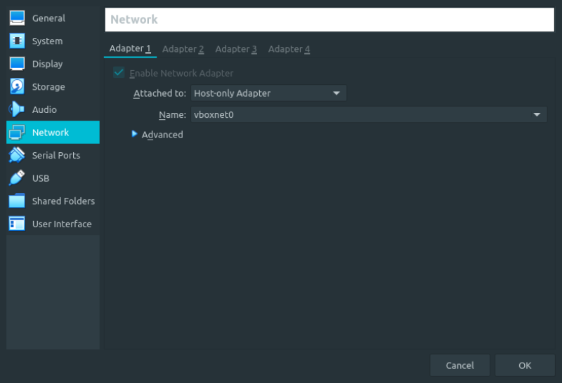
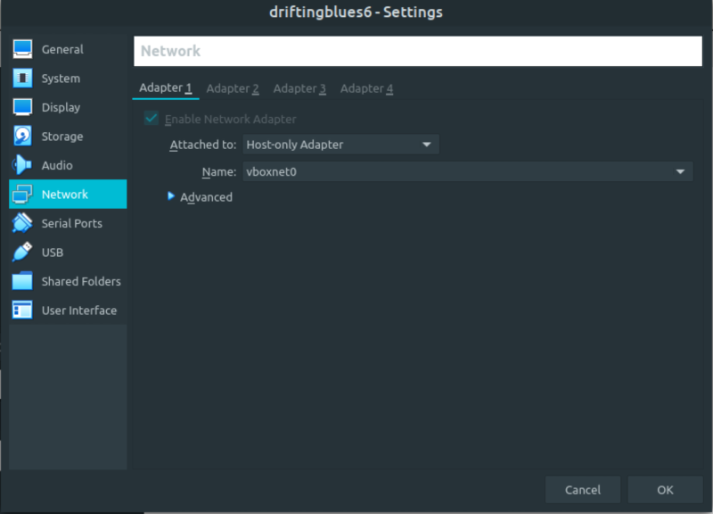
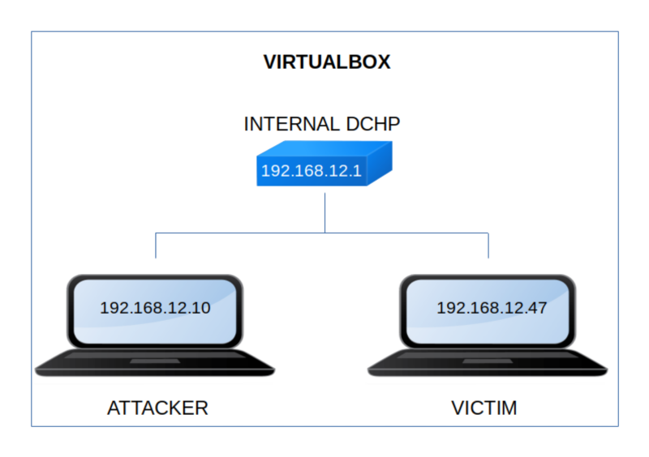

DriftingBlues 6
▸ DriftingBlues 6
▸ 1. Scan Network
▸ 2. Finding Services and Ports
▸ 3. Enumerate
▸ 3.1 Webserver with gobuster
▸ 3.2 Crack zip file
▸ 4. Exploitation
▸ 4.1 Log in “Textpattern”
▸ 4.2 Inject malicious PHP
▸ 4.3 Netcat connection
▸ 5. Privilege Escalation
▸ Get Privilege user (Flag)
Difficulty: Easy.
Flag: 1 flag.
Learning:
• Reconnaissance
Scan Network
Find services
• Enumerate
Webserver with gobuster
Crack a zip file
• Exploitation
Log in Textpattern
Inject malicious PHP
Netcat connection
• Privilege Escalation
Use an Linux Kernel exploit to create a new user in “/etc/passwd” file
Compile a C file
Pawn a python shell
Change user
• Download (Mirror): https://download.vulnhub.com/driftingblues/driftingblues6_vh.ova
• Download (Torrent): https://download.vulnhub.com/driftingblues/driftingblues6_vh.ova.torrent
Install the machine on VirtualBox:
1. Download the file.
2. On Virtualbox choose File->Import Appliance.
3. Select the file “ova”.
4. Accept to import.


Watch your Machine IP.
$ ifconfig
Output:

Diagram
